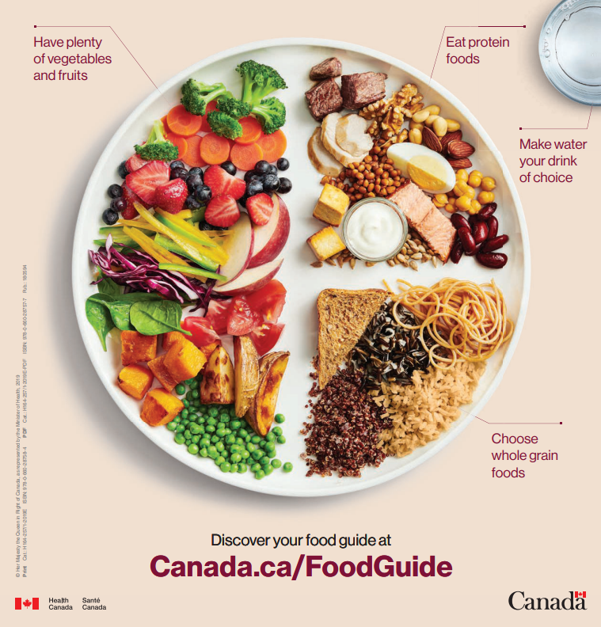

Vegetables & fruits
Eating a colorful variety of fruits and vegetables can give you many nutrients you need, like vitamins to help cell growth and fibre to help keep your stomach happy.
.png) Mission NutritionFuel up for the mission
Mission NutritionFuel up for the mission
Canada's Food Guide
A balanced plate has vegetables and fruits as the largest part, plus whole grain foods, protein foods, and water.
Visit the official Food Guide
Eating a colorful variety of fruits and vegetables can give you many nutrients you need, like vitamins to help cell growth and fibre to help keep your stomach happy.
Try oats, brown rice, whole grain bread, wraps, or pasta.
Try beans, lentils, eggs, tofu, chicken, yogurt, nuts, and seeds.